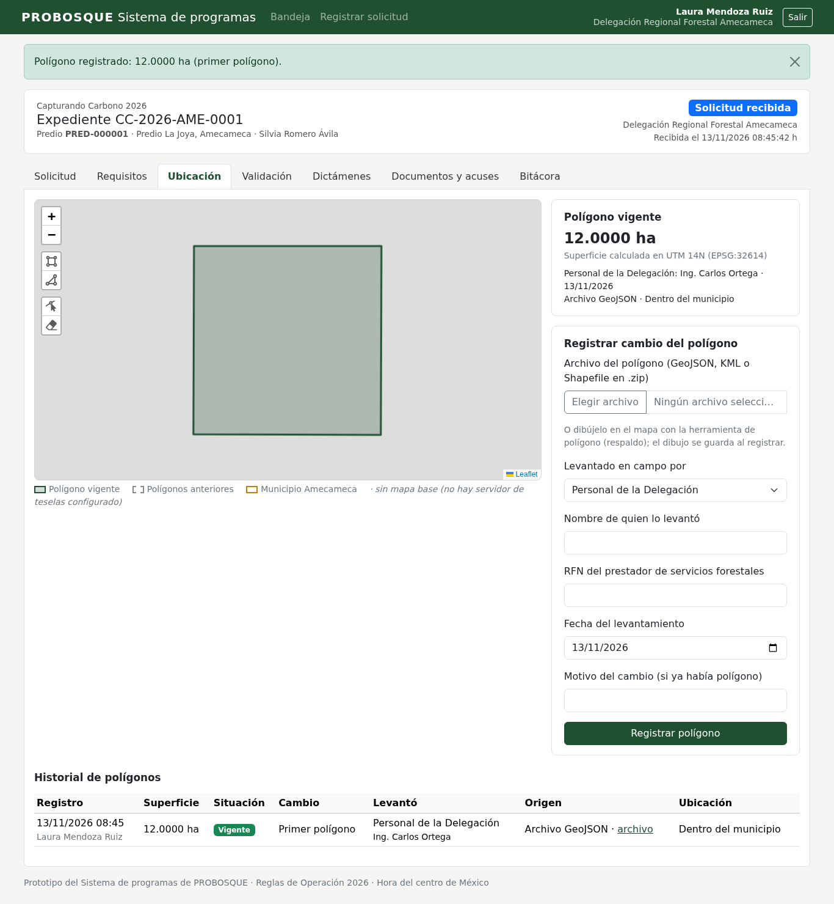
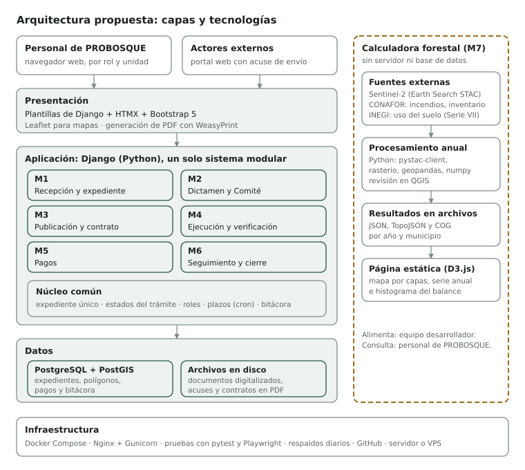
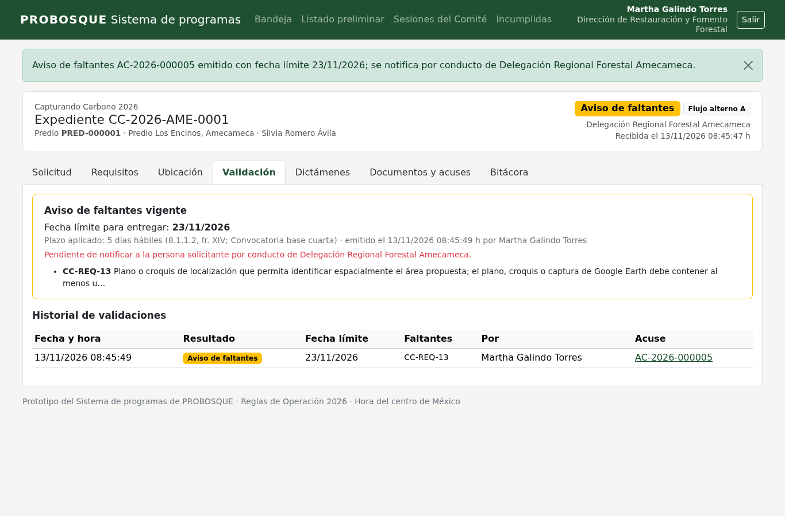
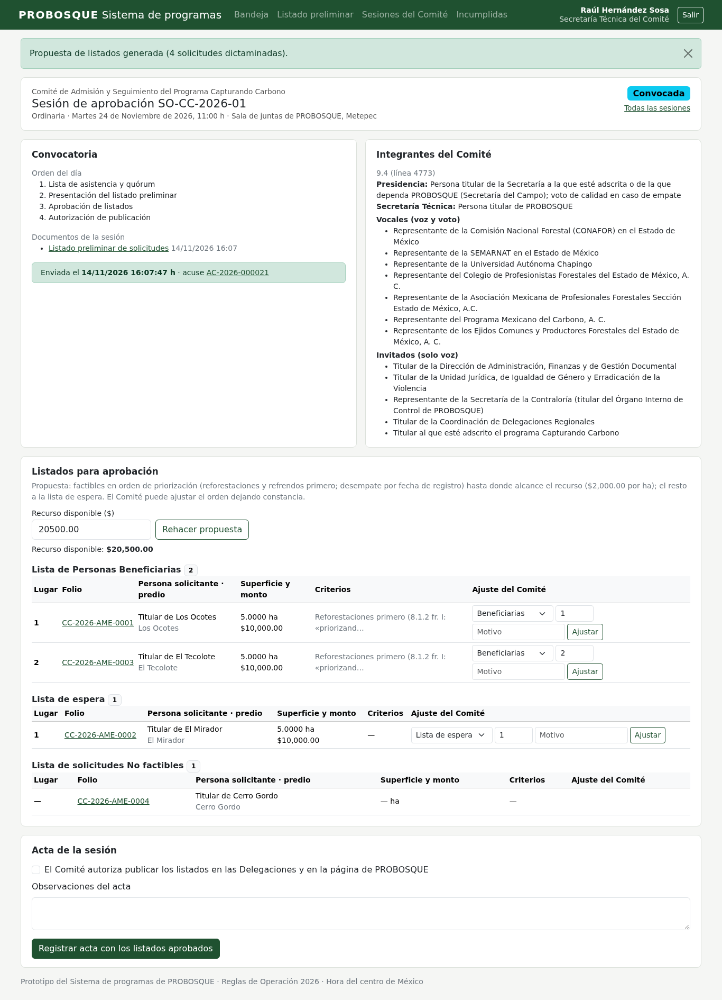

PROBOSQUE · Programas 2026 · Prototipos
Qué problema se atiende, cómo está construido el sistema, qué se hizo en el primer prototipo y cómo quedaron cubiertas las necesidades.
| Prototipo | Recepción y dictamen (módulos M1 y M2) y masa forestal por año (M7.1) |
| Construcción | 13 de noviembre de 2026 |
| Revisión y ajustes | 14 de noviembre de 2026; observaciones del profesor, 23 de noviembre |
| Historias | 9 de 26 (36 de 112 puntos) |
| Repositorio | github.com/Zavjosh05/FEPI, rama prototipos |
| Autor | Joshua Zavaleta |
PROBOSQUE (Protectora de Bosques del Estado de México) opera seis programas de apoyo: Capturando Carbono (CC), Manejo Forestal Sustentable (MFS), Plantaciones Sustentables (PS), Restauración Hidrológico-Forestal (RHF), Pago por Servicios Ambientales Hidrológicos (PSAHEM) y Guardabosques (PEG). Cada uno tiene sus Reglas de Operación, pero todos siguen las mismas etapas: recepción de la solicitud, dictamen, aprobación del Comité, publicación, contrato, pago, comprobación, seguimiento y cierre del ejercicio.
El levantamiento de necesidades (Tablas de necesidades por rol, versión 12) registró 133 necesidades de esos programas y 5 de una herramienta adicional, la Calculadora forestal. Leídas en conjunto describen cuatro problemas:
La propuesta de solución (12 de noviembre de 2026) plantea dos subsistemas independientes: un Sistema de programas con seis módulos generales (M1 a M6), uno por grupo de etapas, que sirven a los seis programas; y la Calculadora forestal (M7), que no usa expedientes ni base de datos. Son 26 funciones, cada una con una sola historia de usuario, repartidas en tres prototipos de una semana.

| Capa | Tecnología | Para qué |
|---|---|---|
| Presentación | Plantillas de Django, HTMX, Bootstrap 5, Leaflet, WeasyPrint | Pantallas por unidad, mapas de los predios y acuses en PDF. Las bibliotecas van dentro del proyecto, sin depender de internet. |
| Aplicación | Django 5.2 con GeoDjango | Una app por módulo (recepcion, dictamen) sobre un núcleo común (nucleo). |
| Datos | PostgreSQL con PostGIS; archivos en disco | Una sola base para el trámite y las geometrías; los documentos digitalizados se entregan solo a quien tiene permiso. |
| Pruebas | pytest, pytest-django, Playwright | Una prueba o más por criterio de aceptación y recorridos de navegador con capturas. |
| Infraestructura | Docker Compose, Nginx, Gunicorn | Todo el entorno se levanta con un comando. |
| Calculadora | Python (rasterio, geopandas), página estática con D3 | Procesa imágenes Sentinel-2 una vez al año y publica archivos; no necesita servidor. |
Es lo que hace que los seis módulos funcionen como un solo sistema, y se construyó completo en este sprint:
El objetivo del prototipo era que una solicitud se registrara en la Delegación, se integrara en el expediente del predio con su polígono, se validara y llegara dictaminada al Comité. Se construyeron los módulos M1 Recepción y expediente y M2 Dictamen y Comité completos, y la función M7.1 de la Calculadora.
Pruebas: las que hoy tiene cada historia (de criterios y recorrido de navegador). Además hay pruebas del núcleo y dos recorridos completos, que no pertenecen a una historia.
Cada flecha dice qué unidad puede hacer ese paso; el sistema no deja a ninguna otra. Los estados en ámbar son los flujos alternos de las Reglas de Operación (A expediente incompleto, B no factible, C lista de espera).
sequenceDiagram
autonumber
actor P as Persona solicitante
participant D as Delegación
participant A as Dirección (Instancia Ejecutora)
participant J as Unidad Jurídica
participant C as Secretaría Técnica y Comité
P->>D: Entrega la solicitud y sus documentos
D->>D: Registra la solicitud a nombre del predio (acuse)
D->>D: Revisa requisitos y carga el polígono
D->>A: Envía el expediente digital (acuse)
alt Faltan documentos
A-->>D: Aviso de faltantes con fecha límite
D-->>P: Notifica el aviso (acuse)
P->>D: Entrega lo faltante
D->>A: Reenvía el expediente
end
A->>A: Valida el expediente
par Dictámenes en paralelo
A->>A: Dictamen técnico con análisis cartográfico
and
J->>J: Dictamen jurídico y cotejo del Listado de Incumplidas
end
A->>C: Listado preliminar
C->>C: Convocatoria con orden del día y documentos (acuse)
C->>C: Acta: beneficiarias, lista de espera, no factibles y autorización de publicación
| Paso | Quién | Qué deja |
|---|---|---|
| Registro de la solicitud | Delegación | Expediente con folio y acuse de recepción |
| Requisitos y polígono | Delegación | Cada requisito revisado con su archivo; polígono con superficie |
| Envío a la Dirección | Delegación | Acuse del envío; el expediente cambia de bandeja |
| Validación o aviso de faltantes | Dirección (Instancia Ejecutora) | Validación, o aviso con fecha límite y la observación de cada faltante, notificado por la Delegación |
| Dictamen técnico y jurídico | Dirección y Unidad Jurídica, en paralelo | Dos dictámenes con motivo, cada uno con su documento en PDF adjunto; revisión de la propiedad del predio; listado preliminar |
| Sesión de aprobación | Secretaría Técnica y Comité | Convocatoria, listados y acta con autorización de publicación |
| Reasignaciones e incidentes | Comité y área responsable | Acuerdos con su causa y su área responsable; bajas que liberan recurso y reasignaciones en el orden de la lista de espera |



Cada función atiende necesidades de varios programas, y cada función tiene una sola historia con sus criterios de aceptación. La tabla dice, historia por historia, qué pide, cómo quedó resuelto y qué necesidades atiende. Los identificadores de necesidad empiezan con la clave del programa y siguen con el rol: DRF Delegación, ARP área responsable (DPF en Guardabosques), UJ Unidad Jurídica, COM Comité, PSF prestador de servicios forestales, BEN persona beneficiaria, DEV equipo desarrollador.
«Atendida» significa que al menos una de las funciones que la cubren quedó construida; «completa», que ya no le falta ninguna función de un sprint posterior. El anexo A lista las 42 necesidades con ese detalle y el anexo B reúne las capturas de cada historia.
La base de datos del sistema está completa y programada desde este sprint: 78 tablas propias en PostgreSQL con PostGIS (ver abajo). Las historias del sprint 1 usan {{tablas}} de ellas, en tres áreas. El diagrama entidad-relación se
genera desde los modelos del código (sistema/docs/modelo_datos.md), así que siempre corresponde a lo
construido. Cada tabla del trámite tiene su tabla de historial (django-simple-history) con el usuario, la fecha y la
hora de cada alta, cambio o baja: es la trazabilidad que pide el último criterio de cada historia.
Desde este sprint la base de datos del sistema está completa y programada: las 78 tablas de los siete módulos, en ocho áreas, existen como modelos de Django con sus migraciones. Las apps de los módulos que llegan después (contrato, pagos, ejecucion, seguimiento y portal) traen por ahora solo sus tablas; sus pantallas y servicios llegan en su sprint, sin crear tablas. El color dice desde qué sprint usan cada tabla las pantallas y servicios. El detalle (arquitectura, decisiones de diseño, diagrama entidad-relación de cada área, diccionario de datos de las 78 tablas e historial) está en el documento aparte entregas/diseno/Diseno_capa_de_persistencia.pdf.
Cada cuadro es una tabla (el nombre del modelo de Django; la tabla en PostgreSQL es <app>_<modelo>). Las {len(datos['tablas'])} están programadas desde el sprint 1; el color dice desde qué sprint las usan las pantallas y servicios: sprint 1 sprint 2 sprint 3
| Área | Se usan desde el sprint 1 (36 tablas) | Desde el sprint 2 (23) | Desde el sprint 3 (19) |
|---|---|---|---|
| 1. Reglas por programa y catálogos Núcleo: base de todas las historias | Consecutivo DiaInhabil Ejercicio Estado Formato Ministracion Modalidad MontoApoyo Municipio Plazo Programa Requisito TipoPersona Transicion Unidad Usuario | — | — |
| 2. Expediente y recepción M1 · HU-1.1 a HU-1.4 | Acuse Documento Evento Expediente Persona Predio ObservacionValidacion Poligono RevisionRequisito Validacion | Hito Notificacion | — |
| 3. Dictamen y Comité M2 · HU-2.1 a HU-2.4 | Acuerdo DictamenJuridico DictamenTecnico DocumentoSesion MovimientoListado PersonaIncumplida PredioSancionado ResolucionSesion RevisionPropiedad SesionComite | — | — |
| 4. Publicación y contrato M3 · HU-3.1 a HU-3.4 | — | Adendum Contrato ElementoFormalizacion Especie FirmaContrato ModeloContrato Publicacion RenglonVale ResultadoPublicado SalidaPlanta SinFirma ValePlanta VersionModelo Vivero | — |
| 5. Pagos M5 · HU-5.1 a HU-5.3 | — | Cheque ComprobanteCuenta OficioPago Pago RemisionFiduciaria RevisionSolicitud SolicitudPago | — |
| 6. Portal de personas beneficiarias Apoyo a M4 y M6 | — | — | AccesoExpediente CodigoConsulta CuentaExterna |
| 7. Ejecución y verificación M4 · HU-4.1 a HU-4.3 | — | — | Comprobacion EnvioEvaluacion EvaluacionPeriodo Incidencia RevisionReporte Verificacion |
| 8. Seguimiento y cierre M6 · HU-6.1 a HU-6.3 | — | — | AvisoOmision CierreExpediente CuentaReintegro InformeAnual PadronPublicacion Propuesta Prorroga Requerimiento Senalamiento SolicitudPersona |
| Área | Tablas principales | Qué resuelven |
|---|---|---|
| Reglas y catálogos (núcleo) | Programa, Ejercicio, TipoPersona, Modalidad, Requisito, Plazo, Formato, MontoApoyo, Ministración, Estado, Transición, Unidad, Usuario, Municipio, DíaInhábil | Lo que cambia entre programas y años, guardado como datos |
| Expediente y recepción (M1) | Persona, Predio, Expediente, Documento, RevisiónRequisito, Polígono, Validación, ObservaciónValidación, Acuse, Evento | El expediente único y todo lo que cuelga de él |
| Dictamen y Comité (M2) | DictamenTécnico, DictamenJurídico, RevisiónPropiedad, PersonaIncumplida, PredioSancionado, SesiónComité, DocumentoSesión, ResoluciónSesión, Acuerdo, MovimientoListado | Dictámenes con su documento, propiedad del predio, listados de incumplimiento, sesiones, acuerdos y movimientos de listado |
Los tres diagramas muestran las tablas principales de cada área, sus primeros campos y cómo se relacionan (uno a
muchos, uno a uno, muchos a muchos); el diagrama completo, con todas las tablas y campos, está en sistema/docs/modelo_datos.md.
La Calculadora mide la superficie con cobertura arbórea (hectáreas) dentro de la zona forestal del INEGI, con imágenes Sentinel-2 de noviembre y diciembre de cada año. El cálculo ya existía; la historia HU-7.1 pedía la cifra de cada año por municipio y para el Estado, y su evolución.

| Comprobación | Resultado al cierre del sprint |
|---|---|
| Pruebas automáticas del sistema | {{pruebas_sistema}} en verde: una o más por criterio de aceptación, las del núcleo y los recorridos de navegador |
| Pruebas de la Calculadora | {{pruebas_calculadora}} en verde: cifras contra los archivos del cálculo, carga diferida y alineación del mapa |
| Recorrido completo por servicios | Una sola solicitud, del registro al acta, comprobando en cada relevo estado, bandeja, acuse y bitácora |
| Recorrido completo por la interfaz | La misma cadena con clics en el navegador y cambio de usuario en cada relevo; el único paso fuera de la interfaz es mover la hora de la sesión para poder registrar el acta |
| Sitio levantado | Responde con una base nueva y la carga de demostración se puede repetir sin duplicar |
| Capturas | {{capturas}} imágenes en entregas/sprint_1/capturas/, nombradas por historia |
Nada se dio por hecho con el informe de quien lo construyó: cada entrega se volvió a probar y se revisaron sus capturas antes de su commit. Hay un commit por historia, con su identificador.
| Ajuste | Qué cambió |
|---|---|
| A-1 | La lista de verificación del dictamen técnico viene sin marcar y exige revisar cada criterio |
| A-2 | El acta no se puede registrar antes de la fecha de la sesión |
| A-3 | «Ajustado» marca solo la fila que el Comité movió |
| A-4 | Los montos llevan separador de miles |
| A-5 y A-6 | Las capturas se guardan solo cuando se piden, y las pruebas rápidas corren aparte de las de navegador |
| A-7 | Se agregó el recorrido completo por la interfaz; pasó, con seis tropiezos menores de navegación que se corrigieron en el sprint 2 |
| Ajuste | Qué cambió |
|---|---|
| O-1 | HU-1.4: cada requisito faltante lleva la observación de la Dirección, en el aviso y en el requisito |
| O-2 | HU-2.1 y HU-2.2: cada dictamen se expide como documento en PDF con folio y queda adjunto al expediente |
| O-3 | HU-2.2: revisión de la propiedad o legal posesión del predio; sin ella acreditada no hay dictamen procedente |
| O-4 | HU-2.4 pasa a «Reasignaciones e incidentes»: incidentes con causa, bajas que liberan recurso y reasignación en el orden de la lista de espera |
| O-5 | Vistas separadas de Candidatos y de Beneficiarios |
| O-6 | Criterio de trazabilidad en todas las historias del sistema y pestaña «Trazabilidad» en el expediente |
El detalle está en Registro_de_cambios_observaciones_23_nov.pdf.
Sprint 2, contrato y pagos. Sobre este prototipo se construyen la publicación de resultados, la elaboración y firma del contrato, la entrega de planta y los pagos (M3 y M5), y en la Calculadora el balance entre dos años con su histograma y la pérdida por incendios (M7.2 y M7.3). Para poder demostrarlos se cargan antes las reglas de PS, RHF y PSAHEM.
sistema/ (sistema) y src/,
docs/calculadora/ (Calculadora). Cómo levantar y probar, usuarios de demostración y decisiones:
sistema/README.md. Avance tarea por tarea: entregas/AVANCE.md. Cada propuesta, su porqué y si
se hizo: entregas/BITACORA.md. Reglas de cada programa: sistema/reglas/.Las funciones que faltan indican en qué sprint se completa cada necesidad.